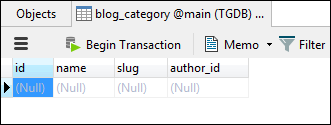
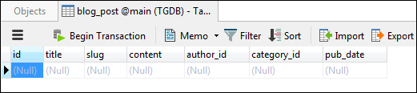
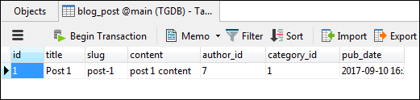
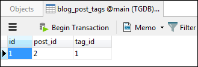

Accessing Related Data Using Django ORM
Last updated on July 27, 2020
In the previous lesson, we have covered all the basic stuff needed to interact with the database using Django ORM. We have created, modified and deleted many objects. The type of the objects we handled till now were simple objects that can exist on their own. In this lesson, we will learn how to insert and access related data, but before we do that we will populate some data in Category, Post and Tag's table first.
If you are following these lessons closely your Author table i.e blog_author should be empty. Before we proceed, let's add some Author objects to the blog_author table. Open Django shell by executing the shell command and import all necessary models from the blog app.
1 2 3 4 5 6 7 | (env) C:\Users\Q\TGDB\django_project>python manage.py shell
Python 3.4.4 (v3.4.4:737efcadf5a6, Dec 20 2015, 20:20:57) [MSC v.1600 64 bit (AM
D64)] on win32
Type "help", "copyright", "credits" or "license" for more information.
(InteractiveConsole)
>>> from blog.models import Category, Tag, Author, Post
>>>
|
Copy and paste the following code in the Django shell to create some authors.
1 2 3 4 5 6 | Author.objects.bulk_create([
Author(name='tom', email='tom@mail.com'),
Author(name='jerry', email='jerry@mail.com'),
Author(name='spike', email='spike@mail.com'),
Author(name='tyke', email='tyke@mail.com'),
])
|
1 2 3 4 5 6 7 8 9 10 | >>>
>>> Author.objects.bulk_create([
... Author(name='tom', email='tom@mail.com'),
... Author(name='jerry', email='jerry@mail.com'),
... Author(name='spike', email='spike@mail.com'),
... Author(name='tyke', email='tyke@mail.com'),
... ])
[<Author: tom:tom@mail.com>, <Author: jerry:jerry@mail.com>, <Author: spike:spik
e@mail.com>, <Author: tyke:tyke@mail.com>]
>>>
|
Let's now shift our attention to the Category model. Here is how the Category model is defined:
TGDB/django_project/blog/models.py
1 2 3 4 5 6 | #...
class Category(models.Model):
name = models.CharField(max_length=100, unique=True)
slug = models.SlugField(max_length=100, unique=True)
author = models.ForeignKey(Author)
#...
|
And this is how blog_category table looks like:

An important point to notice here is that Category model has a one-to-many relationship with the Author's model. As a result, a Category object must be associated with an Author object.
Let's try creating a Category object and see what happens:
1 2 3 4 5 6 7 8 9 10 11 | >>>
>>>
>>> c = Category(name='python', slug='python')
>>>
>>> c.save()
>>>
Traceback (most recent call last):
...
django.db.utils.IntegrityError: NOT NULL constraint failed: blog_category.author
_id
>>>
|
Calling save() method raises an exception of type IntegrityError. You would get the same exception, even if you try to create a Category object using the create() method of the objects manager.
So what's the problem?
The problem is we are trying to create a Category object without an Author.
Okay, let's try creating Category object one more time, but this time we will provide an Author.
1 2 3 4 5 6 7 8 9 10 11 12 13 14 15 16 | >>>
>>> Author.objects.values_list("id", "name")
<QuerySet [(7, 'tom'), (8, 'jerry'), (9, 'spike'), (10, 'tyke')]>
>>>>
>>>>
>>> a1 = Author.objects.get(pk=7)
>>> a1
<Author: tom:tom@mail.com>
>>>
>>> a2 = Author.objects.get(pk=8)
>>> a2
<Author: jerry:jerry@mail.com>
>>>
>>> c1 = Category(name='python', slug='python', author=a1)
>>> c1.save()
>>>
|
As you can see, this time operation succeeded. Instead of calling Category() constructor method you could also use create() method of the objects manager.
1 2 3 | >>>
>>> c1 = Category.objects.create(name='python', slug='python', author=a1)
>>>
|
We can now use c1 variable to get the information about the Category object as well as Author who created this object using the dot(.) operator.
1 2 3 4 5 6 7 8 9 10 11 12 13 14 | >>>
>>> c1.name
python
>>>
>>> c1.slug
python
>>> c1.author
<Author: tom:tom@mail.com>
>>>
>>> c1.author.name
tom
>>> c1.author.email
tom@mail.com
>>>
|
Notice that in the last two commands we are accessing data stored in a different table i.e blog_author without writing SQL join query. That's the power of the Django ORM.
Instead of passing Author object wile creating Category object, you could also pass primary key of the author, but then you would have to assign it to the author_id keyword argument instead of author.
1 2 3 4 | >>>
>>> c2 = Category(name='java', slug='java', author_id=a2.pk)
>>> c2.save()
>>>
|
Similarly, you can create Tag objects as follows:
1 2 3 4 5 6 | >>>
>>> t1 = Tag.objects.create(name="django", slug="django", author=a1)
>>>
>>> t2 = Tag.objects.create(name="flask", slug="flask", author=a2)
>>>
>>>
|
Now we know how to create Category and Tag objects let's shift our attention to the Post model. This is how the Post model is defined.
TGDB/django_project/blog/models.py
1 2 3 4 5 6 7 8 9 10 | #...
class Post(models.Model):
title = models.CharField(max_length=50)
slug = models.SlugField(unique=True)
content = models.TextField()
pub_date = models.DateTimeField(auto_now_add=True)
author = models.ForeignKey(Author)
category = models.ForeignKey(Category)
tags = models.ManyToManyField(Tag)
#...
|
A Post object has following relationships:
- A one-to-many relationship between
PostandCategoryobject. - A one-to-many relationship between
PostandAuthorobject. - A many-to-many relationship between
PostandTagobject.
This is how Post table (i.e blog_post) looks like:

As you can see to create a Post object we have to provide an Author and a Category.
Let's create some Post objects.
1 2 3 4 5 6 7 8 9 10 11 12 13 14 | >>>
>>>
>>> p1 = Post.objects.create(
... title="Post 1",
... slug="post-1",
... content="post 1 content",
... author=a1,
... category=c1
... )
>>>
>>> p1
<Post: Post 1>
>>>
>>>
|
Note that while creating Post object we are not passing any tags to the create() method. This is because a Post object has a many-to-many relationship between Tag object. As a result, the relationship between them will be stored in a different table (blog_post_tags in this case). Once a Post object is saved into the database, we can add tags to it later as you will see.
The variables a1 and c1 must point to a valid Author and Category object respectively otherwise you will get an error.
This is how a Post object looks like in the blog_post table.

Just as with Category or Tag object, we can use a Post object to find any relevant information about the author and category associated with it.
1 2 3 4 5 6 7 8 9 10 11 12 13 14 | >>>
>>>
>>> p1.author.name
'tom'
>>> p1.author.email
'tom@mail.com'
>>> p1.author.active
False
>>> p1.category.name
'python'
>>> p1.category.slug
'python'
>>>
>>>
|
Let's finish this section by creating another Post object.
1 2 3 4 5 6 7 8 9 10 11 | >>>
>>>
>>> p2 = Post.objects.create(
... title="Post 2",
... slug="post-2",
... content="post 2 content",
... author=a2,
... category=c2
... )
>>>
>>>
|
More managers #
The objects is not the only the manager available in Django. It turns out that when dealing with many-to-many relationship Django uses a manager to connect data. In the Post model tags field is one such manager. You can verify this by typing the following code in the Django shell.
1 2 3 4 5 | >>>
>>> type(p2.tags)
<class 'django.db.models.fields.related_descriptors.create_forward_many_to_many_
manager.<locals>.ManyRelatedManager'>
>>>
|
As tags is a manager you can use all manager methods on it that we have learned in the lesson Django ORM.
To view all the tags associated with the p1 and p2 posts type the following code:
1 2 3 4 5 6 7 8 | >>>
>>> p1.tags.all()
<QuerySet []>
>>>
>>>
>>> p2.tags.all()
<QuerySet []>
>>>
|
Currently, posts p1 and p2 are not associated with any tags that's why an empty QuerySet object is returned.
So how do we add tags to existing Post objects?
All relationship managers come with add() method which can be used to connect objects.
1 2 3 4 5 6 | >>>
>>> t1
<Tag: django>
>>>
>>> p2.tags.add(t1)
>>>
|
Now post p2 is associated with django tag. The above command adds the following record in the blog_post_tags table.

1 2 3 4 | >>>
>>> p2.tags.all()
<QuerySet [<Tag: django>]>
>>>
|
You can also associate multiple tags to a Post object by passing multiple arguments to add() method.
1 2 3 4 5 6 7 8 9 10 11 | >>>
>>> p1.tags.add(t1, t2)
>>>
>>>
>>> p1.tags.all()
<QuerySet [<Tag: django>, <Tag: flask>]>
>>>
>>>
>>> p1.tags.all().order_by("-name")
<QuerySet [<Tag: flask>, <Tag: django>]>
>>>
|
We know that once we have a Post object we can find all the information related to it like category, author, tags etc. But, How do we access data another way around? Simply put how do we find all post related to a particular tag or all the post published by a particular author?
Let p, a, c, t be a Post, Author, Category and Tag objects respectively, then
- All the posts published by author
ais given by -a.post_set.all(). - Author of post
pis given by -p.author.name. - All the posts published under category
cis given by -c.post_set.all(). - Category of post
pis given by -p.category.name. - All the posts filed under tag
tis given by -t.post_set.all(). - All tags related to post
pis given by -p.tags.all().
In case you are wondering what is post_set?
The post_set is just another relation manager that Django has created dynamically for you to make database interaction easy. As post_set is a manager you can use all the manager methods on it. You can verify this by executing the following code.
1 2 3 4 5 6 7 8 9 10 11 12 13 14 15 | >>>
>>> c = Category.objects.all()[0]
>>> c
<Category: python>
>>>
>>>
>>> type(c.post_set)
<class 'django.db.models.fields.related_descriptors.create_reverse_many_to_one_m
anager.<locals>.RelatedManager'>
>>>
>>>
>>> c.post_set.filter(id__gte=1)
<QuerySet [<Post: Post 1>]>
>>>
>>>
|
Creating objects the other way around #
So far we have been creating objects either by Model's constructor method i.e Post(), Category() etc; or by using create() method of the objects manager. The other way to create objects is to use related model class and then use the manager's create() method on it. For example, Post and Category model have one-to-many relationship between them, so instead of creating Post object using Post constructor (i.e Post()) or objects manager's create() method, we can use Category object to create a Post object. Here are are some examples:
1 2 3 4 5 6 7 8 9 10 11 12 13 14 15 16 17 18 19 20 21 22 23 | >>>
>>>
>>> Category.objects.values_list("id", "name")
<QuerySet [(2, 'java'), (1, 'python')]>
>>>
>>>
>>> c2 = Category.objects.get(pk=2)
>>> c2
<Category: java>
>>>
>>> a1
<Author: tom : tom@mail.com>
>>>
>>>
>>> c2.post_set.create(
... title = "Post from Java Category",
... slug = "post-from-java-category",
... content = "This is content is for java category",
... author = a1
... )
<Post: Post from Java Category>
>>>
>>>
|
Notice that we are not passing an object of type Category while creating Post object because we are calling create() method on the object of type Category.
Similarly, you can create Post object from a Tag object or Author object.
1 2 3 4 5 6 7 8 9 10 11 12 13 14 15 16 17 18 19 20 21 22 23 24 25 26 | >>>
>>> Tag.objects.values_list("id", "name")
<QuerySet [(1, 'django'), (2, 'flask')]>
>>>
>>>
>>> t1 = Tag.objects.get(pk=1)
>>> t1
<Tag: django>
>>>
>>> c1
<Category: python>
>>>
>>> t1.post_set.create(
... title = "Post from tag object",
... slug = "Post-from-tag-object",
... content = "This is content for title Post from tag object",
... author = a1,
... category = c1
... )
<Post: Post from tag object>
>>>
>>>
>>> t1.post_set.all()
<QuerySet [<Post: Post 2>, <Post: Post 1>, <Post: Post from tag object>]>
>>>
>>>
|
Fetching records using related fields #
Let's say you want to find all the posts from the category 'java'. Here is the one way to find all such posts.
1 2 3 4 5 6 7 8 9 10 11 12 13 14 15 16 17 18 19 | >>>
>>>
>>> Category.objects.values_list("id", "name")
<QuerySet [(2, 'java'), (1, 'python')]>
>>>
>>> c = Category.objects.get(name='java')
>>> c
<Category: java>
>>>
>>> posts = Post.objects.filter(category=c)
>>> posts
<QuerySet [<Post: Post 2>, <Post: Post from Java Category>]>
>>>
>>> posts[0].category.name
'java'
>>> posts[1].category.name
'java'
>>>
>>>
|
Up until now, keyword arguments we have been passing to the filter() method only belongs to the model on which it is called. It turns out that if models are related then we can also pass related field names to the filter() method using the following format.
Model.objects.filter(model__field=some_value)
That's double underscore (__) between model and field.
Using this technique we can achieve the same result as above in one line.
1 2 3 4 5 | >>>
>>> posts = Post.objects.filter(category__name='java')
>>> posts
<QuerySet [<Post: Post 2>, <Post: Post from Java Category>]>
>>>
|
Notice that category__name consists of two underscores.
Similarly, we can find all the post belongs to the author "tom".
1 2 3 4 5 6 | >>>
>>> posts = Post.objects.filter(author__name="tom")
>>> posts
<QuerySet [<Post: Post 1>, <Post: Post from Java Category>, <Post: Post from tag object>]>
>>>
>>>
|
We can also apply lookups to category__name, author__name.
1 2 3 4 5 6 | >>>
>>> posts = Post.objects.filter(category__name__contains='java')
>>>
>>> posts
<QuerySet [<Post: Post 2>, <Post: Post from Java Category>]>
>>>
|
1 2 3 4 5 6 7 | >>>
>>>
>>> posts = Post.objects.filter(author__name__contains='to')
>>> posts
<QuerySet [<Post: Post 1>, <Post: Post from Java Category>, <Post: Post from tag object>]>
>>>
>>>
|
Load Comments